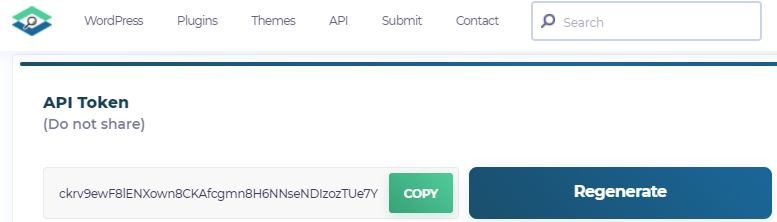
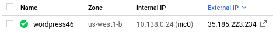
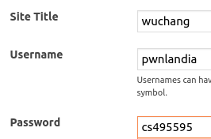
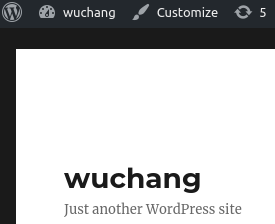
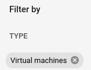
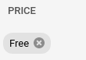
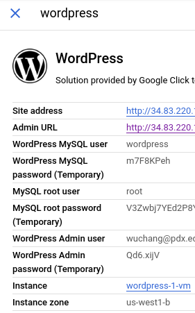
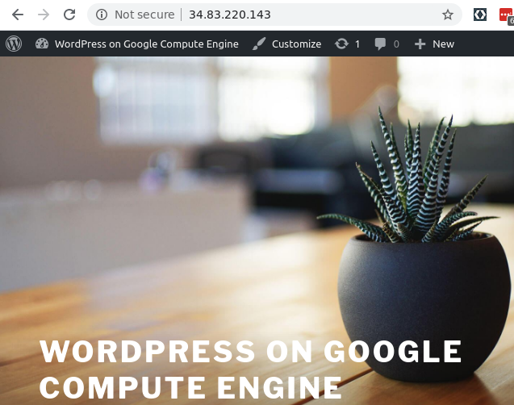
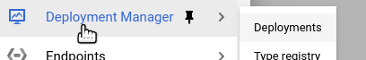

wpscan is a tool that is backed by an on-line, real-time vulnerability database of CVEs that is specific to WordPress that is hosted by WPVulnDB. The tool scans WordPress sites to identify ones running known vulnerable versions. In order to get access to the up-to-date vulnerability database, create an account at: https://wpscan.com/. Then, in your user profile, scroll down to find an API token for your account. Copy the token for future steps in the lab.

To test the tool out, we will setup two different WordPress sites and then use the tool to scan each for vulnerabilities.
We will start by setting up an old version of WordPress. Visit Compute Engine and create a VM called wordpress46 in us-west1-b running a recent LTS version of Ubuntu for AMD64. Enable HTTP traffic to it. Note that this can be performed within Cloud Shell via:
gcloud compute instances create wordpress46 \
--machine-type e2-micro --zone us-west1-b \
--image-project ubuntu-os-cloud --image-family ubuntu-2004-lts \
--tags=http-serverMake a note of both its internal and external IP addresses.

Then, ssh into the instance when it comes up and install docker and docker-compose . Next, create a directory called wp46 and change into it:
sudo apt update -y
sudo apt install docker.io docker-compose -y
mkdir wp46
cd wp46We will be running WordPress using old versions of the official WordPress Docker container (version 4.6 copied from wordpress:4.6) and the official MySQL Docker container (version 5.7 copied from mysql:5.7). Containers are effectively virtual operating system images that can be executed together on a single real operating system. When executing multiple containers on a single machine, docker-compose is sometimes used to bring the collection up and down and to configure its operating parameters including environment variables and virtual networks.
Within the wp46 directory, create a file called docker-compose.yaml using an editor (nano, vim) with the following inside of it.
version: '3'
services:
# Database
db:
image: wuchangfeng/mysql:5.7
volumes:
- db_data:/var/lib/mysql
restart: always
environment:
MYSQL_ROOT_PASSWORD: password
MYSQL_DATABASE: wordpress
MYSQL_USER: wordpress
MYSQL_PASSWORD: wordpress
networks:
- wpsite
# Wordpress
wordpress:
depends_on:
- db
image: wuchangfeng/wordpress-vuln
restart: always
ports:
- '80:80'
volumes: ['./:/var/www/html']
environment:
WORDPRESS_DB_HOST: db:3306
WORDPRESS_DB_USER: wordpress
WORDPRESS_DB_PASSWORD: wordpress
networks:
- wpsite
networks:
wpsite:
volumes:
db_data:The file specifies the credentials for the MySQL database as environment variables passed to the MySQL container. The MySQL container will automatically create the database and configure access to it. The file also specifies the database configuration as environment variables passed to the WordPress container. The WordPress container will use this to connect to the MySQL container to store and retrieve its information.
Invoke docker-compose to bring the containers up.
sudo docker-compose up -dWhen the containers are up and running, go to the Compute Engine console and click on the external IP address of the VM to bring up the WordPress installation screen. Configure English, name the site your OdinID, and fill in a Username and Password that you will remember, then "Install WordPress".

Log into the WordPress site, click on the upper-left home icon.

We will now set up an up-to-date deployment of WordPress. Visit Marketplace on Google Cloud's console. Within "Search", enter in WordPress and search. A large number of solutions can be deployed. Using the filters, select "Virtual machines" and "Free" to identify installations that run on VMs and do not have licensing fees to use.


Select any one of these deployments to run, but avoid high-availability ones that use a large number of servers. Then, "Launch" the deployment and set its zone to us-west1-b. After the launch has completed, configure your deployment by using any credentials given to log into the WordPress admin site.

After logging in and configuring the site, click on the "Home" icon to visit the default landing page for the site.

Go to Compute Engine and bring up your Kali VM. We will now use a Dockerized version of wpscan to scan our two WordPress servers for vulnerabilities. Note that you must scan the WordPress sites using their internal IP addresses to avoid being flagged for abuse.
As part of running wpscan via its Docker container image, we will supply our API token. An example of a command to run the wpscan container against a site is below. Log into your Kali VM and run the command against each WordPress server.
sudo docker run -it --rm wpscanteam/wpscan --url \
http://10.x.y.z --api-token <YOUR_API_TOKEN> --enumerateIf you don't know your API token, refer back to the first step of the codelab. The tool should find a large number of CVEs. Scroll up to examine the CVEs found. Find the total number found towards the top.
Note that if you get a docker daemon error, you will need to restart docker on the Kali VM.
systemctl start dockerFor the Marketplace deployment, show the output of a (hopefully) clean run of wpscan on it.
Go to Deployment Manager in the Google Cloud Console, click on "Deployments" and delete your WordPress deployment.

Then, go to Compute Engine and delete your WordPress 4.6 VM. Via Cloud Shell, you can issue the command below:
gcloud compute instances delete wordpress46 \
--zone us-west1-bFinally, stop your Kali VM (unless you're continuing on to the next lab)